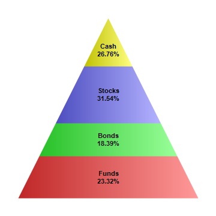

This example demonstrates the basic steps in creating pyramid charts.
The following is the command line version of the code in "cppdemo/simplepyramid". The MFC version of the code is in "mfcdemo/mfcdemo". The Qt Widgets version of the code is in "qtdemo/qtdemo". The QML/Qt Quick version of the code is in "qmldemo/qmldemo".
#include "chartdir.h"
int main(int argc, char *argv[])
{
// The data for the pyramid chart
double data[] = {156, 123, 211, 179};
const int data_size = (int)(sizeof(data)/sizeof(*data));
// The labels for the pyramid chart
const char* labels[] = {"Funds", "Bonds", "Stocks", "Cash"};
const int labels_size = (int)(sizeof(labels)/sizeof(*labels));
// Create a PyramidChart object of size 360 x 360 pixels
PyramidChart* c = new PyramidChart(360, 360);
// Set the pyramid center at (180, 180), and width x height to 150 x 180 pixels
c->setPyramidSize(180, 180, 150, 300);
// Set the pyramid data and labels
c->setData(DoubleArray(data, data_size), StringArray(labels, labels_size));
// Add labels at the center of the pyramid layers using Arial Bold font. The labels will have
// two lines showing the layer name and percentage.
c->setCenterLabel("{label}\n{percent}%", "Arial Bold");
// Output the chart
c->makeChart("simplepyramid.png");
//free up resources
delete c;
return 0;
}
© 2023 Advanced Software Engineering Limited. All rights reserved.